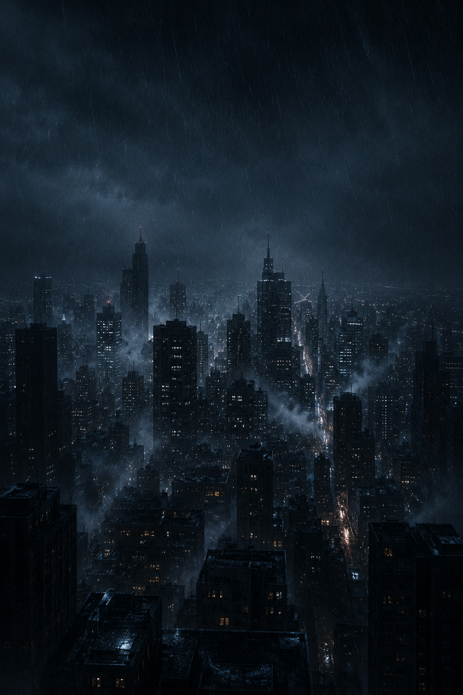
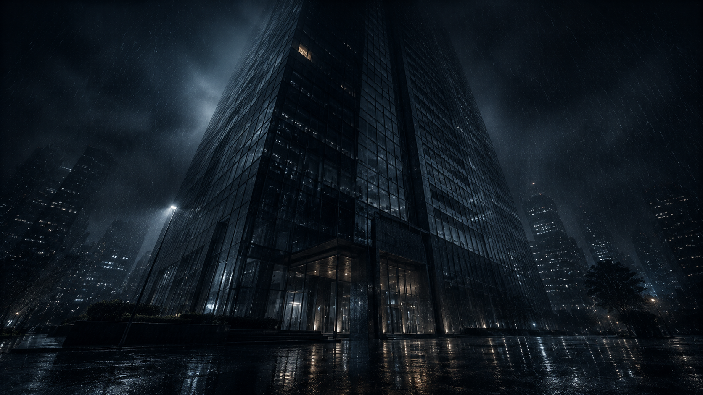

MYSTERY FILE
역린
진실은, 가장 보고 싶지 않은 곳에 있다.
사건을 골라 수사를 시작하라.
雪
CASE · 002
설흔
雪痕
눈 덮인 산장, 단 한 줄의 발자국.
그 밤, 무슨 일이 있었나.
수사 →

回
CASE · 003
회귀
回歸
고층 사옥에서 떨어진 이사장.
범인은 시작일 뿐 — 진짜 질문은, 왜.
수사 →
잠김
CASE · 004
??
?
다음 사건은 곧 공개됩니다.
役鱗 · 逆鱗